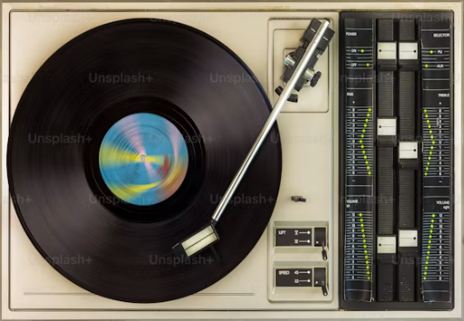
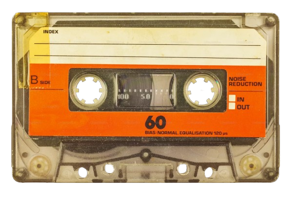
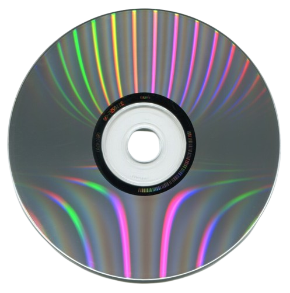
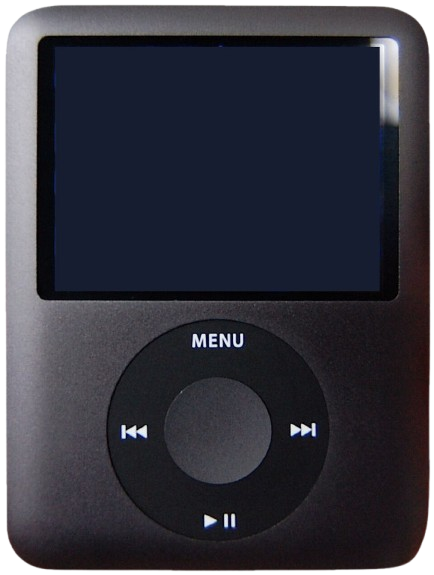
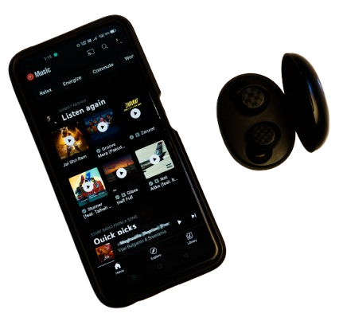

Key Technologies in Music Creation
How listening to music evolved
Vinyl Records
Vinyl manufacturers would press a long winding groove around a small plastic disc known as a vinyl record. Listeners could purchase these records and play them using a turntable, while rare releases also became valuable collectibles.

Cassette Tapes
Cassette tapes provided a smaller and more portable alternative to vinyl records. Portable cassette players such as the Walkman allowed listeners to carry their music with them and listen while travelling.

Compact Discs
Compact Discs, better known as CDs, brought digital audio into the mainstream. Compared with vinyl records and cassette tapes, CDs offered clearer sound, greater durability and convenient track selection.

MP3 Players
Portable MP3 players represented a major step into the digital age of music. Consumers could store thousands of songs, organise playlists and search for individual tracks on a compact device small enough to fit in a pocket.

Streaming Platforms
Streaming now dominates how many people listen to music. Platforms such as Spotify and Apple Music provide access to millions of songs and albums on demand, shifting listeners from owning individual recordings to accessing large digital libraries.
